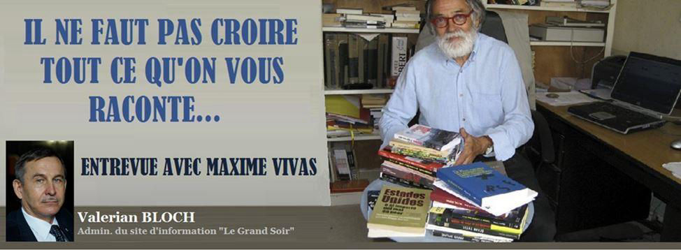
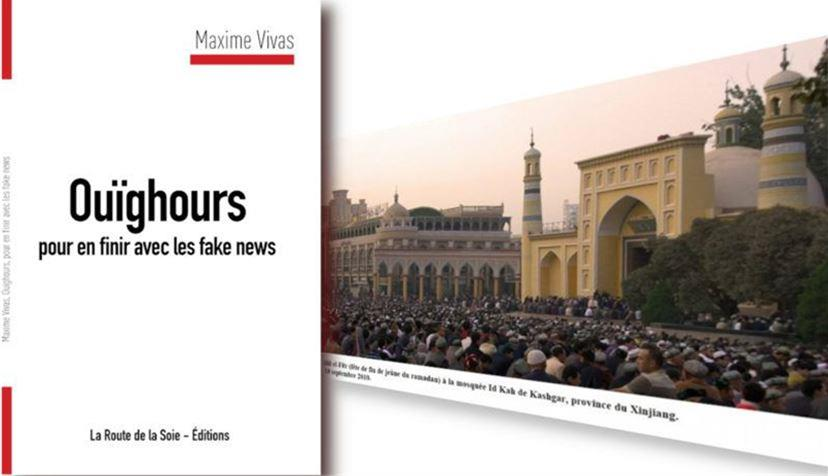
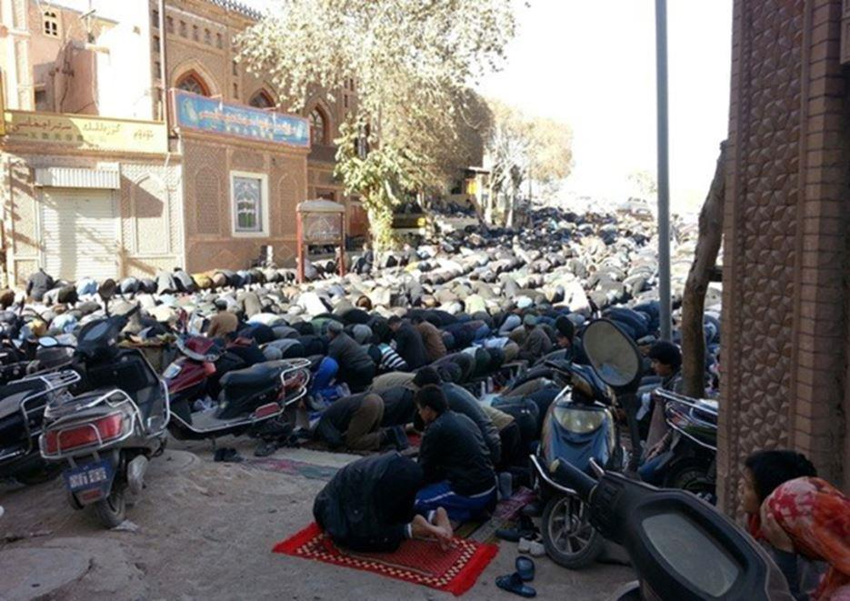

Il ne faut pas croire tout ce qu’on vous raconte… Entrevue avec Maxime Vivas
par Valerian BLOCH

Maxime Vivas est un écrivain, essayiste et journaliste français. Il est l’auteur de plusieurs livres, dont « Ouïghours pour en finir avec les fake news » sortie chez La Route de la Soie Editions le 1 avril 2021.
Valerian BLOCH : Comment vous êtes arrivé à étudier la question ouïghoure ?
Maxime VIVAS : Ça a été une longue histoire parce qu’au départ, j'avais écrit un livre sur le Tibet. Je m'étais rendu au Tibet en 2010 et j'avais écrit un livre au retour, un livre sur lequel je disais la vérité sur le Tibet et non pas ce que racontent les médias. Les Chinois ont pris l’intérêt pour ce que j'ai écrit sur le Tibet. Ils m'ont invité à aller au Xinjiang avec une quarantaine de journalistes de nationalités différentes. J’y suis allé en 2016. Et puis j'ai écrit un article sur ce qui s'est passé qui était tout à fait en contradiction avec ce que racontent les médias occidentaux. Les Chinois m’ont réinvité en 2018 et je suis parti. Au retour, je voyais qu'il y avait tellement de contre-vérités sur le Xinjiang, c'était un peu comme sur le Tibet. C'est une série de mensonges permanents.
Je voyais bien les mensonges qui étaient proférés dans les médias et repris par une partie de la classe politique. Je voyais bien tout ça, et j'ai hésité malgré tout à écrire ce livre, parce que je savais que ça allait être dangereux pour moi et que j'allais avoir contre moi beaucoup de personnes qui allaient se jeter non pas contre le livre, mais contre l'auteur.
Et c'est ce qui s'est passé avec mon livre. J'ai commencé à écrire en juin 2020 parce que je trouvais que c'était insupportable de voir tout ce qu'on a confié sur le Xinjiang et qui était vraiment mensonger. Et puis je l'ai publié en 2020. J'ai trouvé une éditrice et pourtant ça n'a pas été facile, parce qu’éditer en France un livre qui ne soit pas un titre antichinois n'est pas facile.
C'est assez difficile, mais j'ai trouvé une lectrice qui, elle-même, avait été au Xinjiang et qui aussi avait remarqué la différence entre ce qu'elle voyait et ce que nos journalistes racontaient. J'ai travaillé avec elle pendant trois mois pour relire le manuscrit, pour corriger tout, vérifié tous les détails, de manière à ne pas être attaqué sur le contenu du livre. Et c'est bien ce qui s'est passé. On n'est pas attaqué sur le contenu du livre, mais sur l'auteur et l’éditrice.
J’ai été attaqué en France - et ce de manière affreuse - par un essaim de journaux, y compris des grands quotidiens, des chaînes de télévision, des radios… J'ai tout entendu : que j'étais un grand naïf, que j'avais été acheté par les Chinois, que j'étais un idiot utile, que j'étais un rouge-brun, c'est à dire un nazi. Tout ça parce qu'en fait, ils ne pouvaient pas s'attaquer au contenu du livre. Le livre est sorti au mois de décembre et au mois de mars, le ministre des Affaires étrangères chinois a parlé de moi et de mon livre au cours d'une conférence de presse. Une conférence de presse internationale et du coup, ça a donné un écho international à ce livre.
Et ça a agacé un peu plus les médias.
V.B. : Vous êtes allé ou à Xinjiang, dans quelles villes ?
M.V. : J'en ai fait plusieurs. Xinjiang est une région chinoise qui est grande comme trois fois la France, un sixième de la superficie de la Chine. Pour aller d'un bout à l'autre du Xinjiang, il faut prendre l'avion. J'ai vu effectivement surtout les grandes villes comme Urumqi et Kashgar. Et puis ensuite, en roulant dans des minibus, on a vu des petits villages aussi.
Au cours de mes deux voyages, j'ai visité des écoles, des usines, des fermes. J'ai pu voir beaucoup de choses. Alors évidemment, je n'ai pas tout vu. On me dit : «M. Vivas, ils vous ont montré ce qu’ils voulaient vous montrer ». Oui, bien sûr ! Pourtant, ce que j'ai vu ne correspond pas à ce qu'on dit.
Au Parlement européen, il y a un député qui s'appelle Raphaël Gluksmann. Que dit-il ? « Si vous avez la barbe, vous allez dans un camp de concentration. Si vous lisez le Coran - camp de concentration. Si vous faites la prière - camp de concentration ». Et moi, j'y étais. J'ai vu des barbus ouïghours. J'ai vu les prières de rue. J'ai vu une école coranique où des élèves étaient en train d’apprendre le Coran.
Après, il y a des mensonges qui sont plus difficiles à démentir parce que la vérité court toujours derrière le mensonge et le mensonge a toujours quelques mètres d'avance. Quand l'ensemble des médias me dit qu'il y a un génocide à Xinjiang, il y a un poids. Pour répondre à ça, il faut peu de temps. Donc, quand ils disent qu'il y a mille esclaves ouïghours dans des champs de coton, pour répondre à ça, il faut aussi un peu de temps. Il y a les mensonges qu'on peut démentir très rapidement. Et puis, il y a ceux qui demandent un peu plus de temps.
Un mensonge parle toujours tout seul. Étant seul il peut vous dire n'importe quoi, il peut vous dire oui, effectivement, les femmes ouïghoures sont stérilisées, il y a des prélèvements d'organes sur les enfants ouïghours pour les vendre à des pays arabes comme l'Arabie Saoudite. On peut toujours dire ça et c'est très difficile de trouver que ce n'est pas vrai. Au bout d'un moment, cette rumeur se répand, ce qui fait qu'en France actuellement, si vous prononcez le mot « Ouïghour », les gens vont me dire dans la rue : « Ah oui, le peuple martyr, le génocide. » Alors que cette histoire de génocide d`Ouïghours, d'esclavage et de prélèvement d'organes, c'est aussi vrai que les armes de destruction massive de Saddam Hussein.
Sur les Ouïghours c’est la même chose. Tout ce qu’on nous raconte est faux. Par contre, ce qui est vrai c’est le comportement des autorités chinoises pour lutter contre ce qu'elles appellent les trois fléaux - islamisme radical, séparatisme et terrorisme. Effectivement, il y a des mesures qui sont prises par le gouvernement chinois et ces mesures-là existent, elles sont sévères, je n'en ai vu qu’une partie et j'en parle dans mon livre. Ce n’est pas la peine de dire que ça n'existe pas, mais ce ne sont pas des camps de concentration.
On nous dit qu'il y aurait actuellement entre 3 et 5 millions d’Ouïgours dans les camps de concentration. C'est extraordinaire ! Il est vrai qu'on aurait pu avancer 8 ou 10 millions de personnes et personne ne dirait « vous exagérez ». Et puis, on le répète à tue-tête. C'est bien Goebbels qui disait que si on répète un mensonge à l’infini, ça devient une vérité absolue. Et c'est ce qui se passe avec Xinjiang. C'est ce qui s'est passé il y a une dizaine d'années avec le Tibet. On prenait les Tibétains pour un « peuple martyr », il y avait des campagnes « Free Tibet !». Et maintenant, c'est passé.
Assez récemment les avocats du Département d'État américain ont laissé entendre qu'il fallait arrêter avec cette histoire de génocide parce que ça ne tenait pas la route. Et ce sont les avocats du Département d'État US qui l’ont avancé ! Et voilà, voilà comment ça se fait. Mais n'empêche que chez nous, on parle toujours de génocide, esclaves, amputations d'enfants. Avec tout ça ils jouent sur la méthode journalistique ou plutôt une méthode de propagande très connue. Vous parlez à l'émotion au lieu de parler au rationnel. Quand on vous montre un enfant ouïghour en vous disant qu'il va être tué pour lui prélever le foie, évidemment vous avez envie de pleurer et vous devenez très antichinois.
Si on vous dit qu’il y a quelque 700.000 esclaves ouïghours dans les champs de coton, vous êtes aussi révolté. Pourtant on peut poser la question : mais comment se fait-il que le gouvernement chinois s'acharne contre ces 12 millions de musulmans alors qu’ailleurs en Chine il existe bien d’autres musulmans qui ne sont pas tous Ouïghours ? Or, j'ignore pourquoi le gouvernement chinois s'acharne contre ces Ouïghours-là, alors qu'en fait, son intérêt à lui, ce serait plutôt d'être bienveillant pour pouvoir les attacher. Les Ouïghours ne demandent pas leur indépendance. La logique qui veut que le gouvernement chinois soit si cruel avec les Ouïghours n'a qu'une seule explication et c’est une explication raciste - les Chinois sont intrinsèquement cruels. Ils sont jaunes, asiatiques et cruels, sinon il n’y a aucun élément logique probant pour expliquer pourquoi ils font ça. Mais la vérité est bien simple : ils ne le font tout simplement pas ! Ce qu'ils font effectivement, et c'est une politique de contrôle et de surveillance du Xinjiang que j'avais vu : quand vous roulez sur la route, y'a des checkpoints. Dans la campagne vous voyez des maisons d'un petit village avec les codes QR collés sur les maisons. Si vous voulez demander une carte SIM, il faut aller dans un bureau avec votre passeport. Il faut remplir des papiers. Il y a effectivement des mesures de contrôle parce qu’ils ont eu le problème terroriste. Actuellement, il y a des milliers d’Ouïghours qui font la guerre avec Daesh (Etat Islamique), en Syrie ou ailleurs. Ces milliers de fanatiques qui sont armés et qui apprennent l'art de la guerre - ils vont peut-être revenir et reviennent avec leur savoir-faire. Les Chinois sont extrêmement vigilants.
Ensuite, il y a aussi le problème de la République populaire chinoise, c'est que Xinjiang est une région un peu en retard par rapport à d'autres. Par exemple, il y a des Ouïghours qui ne parlent pas la langue officielle. Ils parlent ouïghour, mais ils ne parlent pas le mandarin. C'est un peu gênant pour avoir des emplois pour eux, pour commercer, pour se déplacer en Chine, pour ouvrir des commerces internationaux... Actuellement, les Chinois essaient de faire en sorte que tous les Ouïghours apprennent le mandarin. Ils le font dans des centres et pas dans des camps de concentration. Les Chinois essaient de former la population Ouïghour à des métiers, dans des centres de formation professionnelle. Voilà, voilà comment ça se passe. Comme disait Victor Hugo – « Ouvrez une école et vous fermez une prison ».
Et puis aussi, quand je l'ai vu, ça aussi, il y a un système de discrimination positive. C'est une discrimination positive qui consiste à donner des points au départ à des Ouïghours qui passent leurs examens. J'ai vu ça : ils peuvent passer leur examen et rentrer dans une université à Pékin. Dans ce cas, la discrimination positive peut les aider à décrocher un diplôme.
Et puis aussi la discrimination positive peut profiter à des Ouïghours pour ouvrir une entreprise. C’est tout à fait contraire par rapport à ce qu’on nous dit. Il faut revenir aussi aux notions fondamentales. Qu'est-ce qu'un génocide ? C’est la destruction d’une ethnie. Vous connaissez très bien l’histoire du génocide juif lors de la Seconde guerre mondiale : après la fin du conflit armé on comptait six millions de juifs en moins. On peut toujours dire ce qu'on veut, mais ça semble tellement énorme que j'ai voulu y répondre. Moi, j'aimerais bien qu'un monde ne soit pas unipolaire. J'aimerais bien qu'il y ait des autres puissances qui se révoltent - ne serait-ce qu’un tout petit peu - contre l'impunité totale dont jouissent les Américains. Ce serait bien pour tout le monde, bien aussi pour la paix ! Voilà, donc c'est bien ce qui me motive. Je suis Français, je suis patriote. Il me semble que la France est contrainte d'épouser entièrement à chaque fois la politique des États-Unis contre la Chine. Je comprends que les Américains ont intérêt à rester les premiers – America First !, mais la France n'a pas à rentrer dans ces considérations. Les considérations que nous devons avoir, c'est d'abord de bien considérer que la Chine n'est pas un pays ennemi. La Chine n'a jamais attaqué la France.
Depuis longtemps, les États-Unis sont les meilleurs, sont les champions de la propagande et c'est ce qu'ils font actuellement. Ce qu'ils ont fait à propos du Tibet. Ils sont à peu près sûrs que la quasi-totalité de journaux occidentaux va servir de relais. C’est une superpuissance qui fait à peu près ce qu'elle veut et qui fait la guerre. Et elle est toujours en guerre. Il n'y a pas une seule année où les États-Unis n’étaient pas en guerre… En général, ils sont en guerre contre les pays lointains et assez faibles. Ils ne vont pas attaquer la Russie ou la Chine. Ils attaquent beaucoup de petits pays comme ça. On reproche aux Chinois leur politique contre les musulmans ouïghours fanatiques, mais la politique des États-Unis contre les fanatiques qu'ils ont attaqués, a été pire que ça : ils ont détruit quand même l'Afghanistan et l'Irak. Ils ont tué des centaines de milliers de musulmans, ce qui est une leçon de génocide.
V.B. : Mais il y a quand même des sources scientifiques et journalistiques à partir desquelles ces accusations sont faites ? Par exemple, Adrian Zenz.
M.V. : Il est considéré comme une source mais les gens ne vont pas regarder qui c’est. Zenz est un anthropologue allemand qui vit aux États-Unis, et qui milite dans les organisations anticommunistes aux États-Unis. Il se dit évangéliste et qu'il est guidé par Dieu pour combattre la Chine. Quelle est la compétence d’Adrien Zenz sur Xinjiang ? Il y est allé une fois en tant que touriste en 2007. Il dit qu'il travaille actuellement sur les documents chinois. Et malheureusement, chaque fois qu’il a des documents chinois qu'on peut vérifier, on voit qu’il a falsifié, triché, modifié les chiffres. C'est un menteur. C'est un gars qui est en mission : son métier à lui est d'inventer n'importe quoi sur le Xinjiang. D’abord il dit qu’il y a un million des détenus en Xinjiang, ensuite il y en a déjà un million huit-cents… Tout est est approximatif. Il lance un chiffre et il sait que l’ensemble des médias vont gober ça. Ce n’est pas un chercheur, c’est un militant politique et il faut le prendre comme ça. Chez nous, malheureusement, je vois des partis politiques et des médias, y compris d'ailleurs quelque fois les partis politiques de gauche, qui reprennent les propos d’Adrian Zenz, sans voir que c’est un menteur, sans lui demander des preuves. Parce que des preuves, il n’y en a pas. On dit - si ! Il y a des preuves de l’existence des camps de concentration. Et quelles sont ces preuves ? Il y a un gars qui a pris une photo en roulant en voiture, et on y voit un mur de prison. Mais je peux faire ça aussi en France ! Ensuite on vous sort d’autres preuves - comme des photos prises par des satellites. En général, ces photos des satellites ont été nettoyées des indications, de longitude et de latitude. Mais les photos des satellites comportent impérativement la longitude et la latitude indiquées. Et chaque fois que des médias ont oublié d'enlever de la photo la latitude et la longitude, c’est très facile à vérifier !
Je l'ai fait avec Google Maps. On s'aperçoit que ce qu'il appelle « un camp de concentration », c'est une école ou un gymnase ou encore un centre administratif. Voilà le genre de mensonges répétés, mais les gens ne cherchent pas à vérifier. On leur dit qu’il s’agit d’un camp de concentration et ils y croient. Moi, je me rappelle très bien avoir vu des images-satellite des prétendues usines des armes de destruction massive de Saddam Hussein.
V.B. : Certains politiciens américains ont appelé à boycotter les Jeux Olympiques de 2022 en Chine. Que pensez-vous de cet appel ?
M.V. : Ça me rappelle 2008. J'étais en Chine et, en 2008, il y avait déjà des appels à boycotter les JO de deux mille huit. Il y avait déjà une campagne vigoureuse qui avait été lancée par une ONG -« Les reporters sans frontières. » Il y avait une campagne pour boycotter la cérémonie d’inauguration des Jeux Olympiques. Ça n’a pas marché parce qu’en France, c'était Sarkozy à l'époque et il y est allé mais pas assez longtemps. Bush y est allé aussi. Je pense que d’ici l’année prochaine l’histoire des Ouïghours sera dégonflée. D'autant plus que les Chinois ont intérêt à faire de la nouvelle politique qu'ils n'avaient pas avant. Avant ils s'occupaient surtout à développer leur économie, mais aujourd’hui ils sont arrivés à un point de développement qui leur permet maintenant de répondre à une polémique. Je pense qu'ils auront d'ici-là reculé cette histoire de « génocide ouïghour ». Cette campagne de boycott ne va pas aboutir, il n’y aura pas de boycott ! Même les États-Unis ne vont pas les boycotter. Ce n’est pas un danger réel. Chaque fois que les Américains prennent des mesures contre la Chine, ça leur coûte plus cher à eux qu’aux Chinois.
V.B.
Valérian Bloch, de son nom de guerre, est un homme d’affaires russe, francophile, officier, sexagénaire, habitant en Russie, journaliste et auteur d’un ouvrage en russe sur les forces de dissuasion de la période soviétique. Il réside à Saint-Pétersbourg et est de toutes les batailles pour défendre à cor et à cri les valeurs traditionnelles européennes et l’idée d’une Europe gaullienne allant de l’Atlantique à l’Oural.
Partager cette page